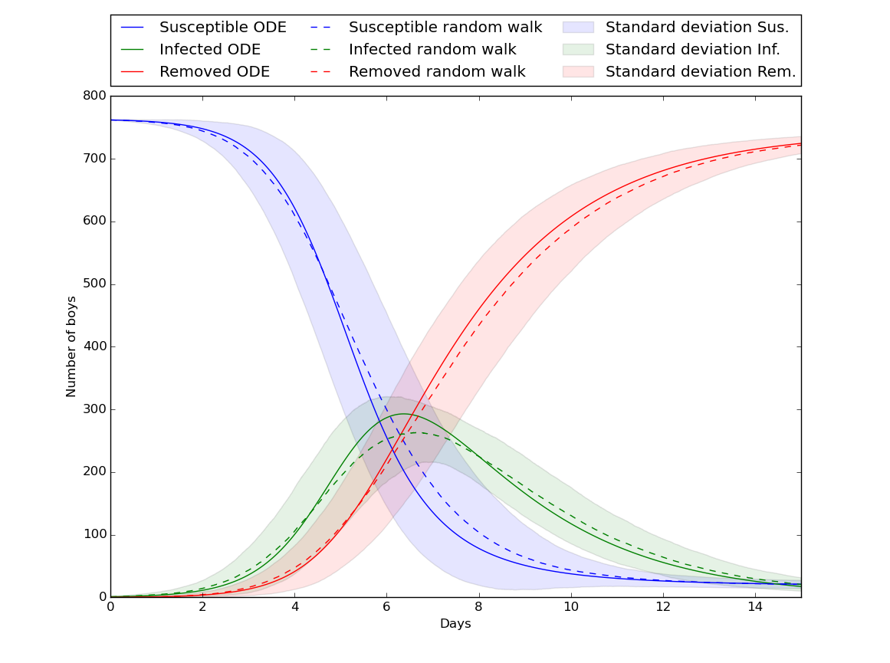
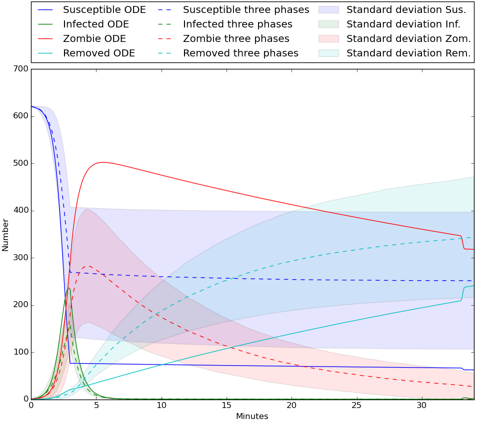

Random walk
Torbjørn Seland
Dec 18, 2014
Table of contents
Random walk
Monte Carlo methods
Random variable
Probability distribution functions (PDF)
Moments of a PDF
The pertinent variance \( \sigma ^2 \)
Random walker
English Boarding School
Lower maximum concentration for the Infected group
The chance for a disease to spread
Zombiefication
Random walk
Moving smart
Three phases in Walking Dead
Free areas for the Susceptible group
Discussion
Bibliography
\externaldocument{../1_ODE_models/biological_models.do.txt}
\externaldocument{../2_PDE_Fisher_Kolmogoroff/2_PDE_FK.do.txt}
Random walk
The last chapter will study a third way to model epidemic diseases. This will be done by using random walk. This technique is quite different from the two models presented earlier. Here Monte Carlo simulations and probabilities are used instead of differential equations, which have been in focus earlier. The first section will be an introduction to general principles for Monte Carlo methods and Random walk based on the paper from M.H. Jensen Ref. [1]. The next sections will use the parameters from the English Boarding School and Walking Dead to see if a random walk system can expand the knowledge about epidemics by adding human behavior.
Monte Carlo methods
Techniques from Monte Carlo are widely used in several fields as chemistry, physics, medicine, biology and in finance Ref. [1]. These numerical methods can be seen in general terms as statistical simulation methods, which use random numbers to perform the simulations. Four terms are required to understand the Monte Carlo strategy:
- Random variable
- Probability distribution functions (PDF)
- Moments of a PDE
- The pertinent variance \( \sigma ^2 \)
The two first terms are important when modelling a random walk simulation, while the two last terms are important when studying the result. The four terms are explained below.
Random variable
Random variable can be seen as a stochastic variable, where the outcome cannot be presumed. Examples as tossing dice, flipping coins or gambling are based on this principle. Although the outcome is unknown, knowledge about the probability and the range can be studied. The numbers in the domain for two dice are
$$
\begin{equation*}
\{2,3,4,5,6,7,8,9,10,11,12\}
\end{equation*}
$$
with the corresponding probabilities are
$$
\begin{equation*}
\{1,2,3,4,5,6,5,4,3,2,1\}\frac{1}{36}
\end{equation*}
$$
By throwing two dice once, there is no guarantee that the result will be 7, though this has the highest probability. However, by repeating this operation, the distribution would reflect the probabilities above. A stochastic variable can either be discrete or continuous, but will in both cases be denoted as capital letters, \( X,Y \). A discrete example is the example above, where the domain is given with exact values, \( {x_1,x_2,x_3,...,x_n} \). The continuous case can be seen as the probability in a given area. An example can be the distance from a dart to the center, after trowing a dart randomly.
This chapter will use random variable for several decisions. The path of the walker will be controlled by two random variables. The first will control the direction of the walker, by drawing a random number between \( 0 \) and \( 2\pi \). The second random variable will control the number of time steps walked in the chosen direction. Here a number between 1 and 20 is drawn. This is done to create a more realistic movement pattern. Random variables will be drawn for each parameter value given in the previous ODE and PDE systems. Here the outcome will be based on the random variable and the probability given by the parameter value.
Probability distribution functions (PDF)
The PDF is a function \( p(x) \) on the domain that gives the probability or relative frequency for a outcome. In the discrete case, the function can be seen as
$$
\begin{equation}
p(x) = Prob(X=x)
\end{equation}
$$
The PDF in the continuous case is not able to directly depict the actual probability. The probability is instead defined as the density around \( x \) with an infinitesimal interval. This can therefore be seen as an integral, since it is the density of the probability rather than the probability Ref.[1]. This can be defined.
$$
\begin{equation}
Prob(a\leq X \leq b) = \int^b_a p(x)dx
\end{equation}
$$
To quote M.H. Jensen "Qualitatively speaking, a stochastic variable represents the values of numbers chosen as if by chance from some specified PDF so that the selection of a large set of these numbers reproduces this PDF." Ref.[1]. This sums up the relation between random variables and the PDF. If this is not fulfilled, the group of stochastic variables does not fulfill the criteria for random numbers.
There are two properties that the PDF must fulfill. The first one is the size of \( p(x) \). This has to be in the interval \( 0\leq p(x) \leq 1 \), since the probability cannot be negative or larger than 1 for an event to happen. The sum of all events has to be 1, both for discrete and continuous PDFs, and can be seen as follows
$$
\begin{equation}
\begin{aligned}
\sum_{x_i \in \mathbb{D}} p(x_i) = 1\\
\int_{x \in \mathbb{D}} p(x) dx = 1
\end{aligned}
\end{equation}
$$
There are several distributions that are essential when looking at continuous PDFs. The main PDF in this chapter will be uniform distribution and can be seen in Eq.\eqref{eq:uni_dist}.
$$
\begin{equation} \label{eq:uni_dist}
p(x) = \frac{1}{b-a}\theta(x-a)\theta(b-x)
\end{equation}
$$
with:
$$
\begin{equation}
\begin{aligned}
\theta(x) = 0,\quad x < 0 \\
\theta(x) = 1,\quad x \geq 0
\end{aligned}
\end{equation}
$$
This is used to disperse the group of walkers at initial time over the area. The chance will be equal for all positions. This PDF is also used in the movement pattern and for the spread of the disease. To get a correct estimate, it is important that the set of random numbers is large enough. Gaussian distribution is the second PDF used in this chapter. This is often called normal distribution and can be seen in Eq.\eqref{eq:gauss_dist}
$$
\begin{equation} \label{eq:gauss_dist}
\begin{aligned}
p(x) = \frac{1}{\sigma \sqrt{2\pi}} \exp(-\frac{(x-\mu)^2}{2\sigma^2})
\end{aligned}
\end{equation}
$$
This will give the same distribution as the Gaussian function used in the previous chapter. Here it will be used for the simulations of all three phases, to describe the initial positions of the walkers.
Moments of a PDF
By defining \( h(x) \) as an arbitrary function, the expectation value can be written
$$
\begin{equation}
\langle h \rangle_X \equiv \int h(x)p(x)dx
\end{equation}
$$
Here, defined on the domain of the stochastic variable \( X \), with PDE \( p(x) \). A more general way to write the expectation is by adding a power of, \( n \), to the equation. This can now be seen as the moments. The \( n \)-th moment is defined
$$
\begin{equation}
\langle x^n \rangle \equiv \int x^np(x)dx
\end{equation}
$$
The value of \( n \) can be set to zero. This results in \( \langle 1 \rangle \) and creates a normalized condition for \( p \). The first order is called mean and is often defined with a \( \mu \).
$$
\begin{equation}
\langle x \rangle = \mu \equiv \int xp(x)dx
\end{equation}
$$
This represents the average value of PDF and is often called the expectation value of \( p \) Ref.[1]. Since this system consists of small group of walkers, which is modeled over a short period, the results from the simulations will vary. Therefore a set of simulations will be performed and the average values will be used.
The pertinent variance \( \sigma ^2 \)
Central moments is a special case of moments defined as
$$
\begin{equation}
\langle (x-\langle x \rangle)^n \rangle \equiv \int (x-\langle x \rangle)^np(x)dx
\end{equation}
$$
The first two central-moments are trivial and only result in 1 and 0, respectively for \( n=0 \) and \( n=1 \). However, the second central-moment is more interesting to study. This is denoted as \( \sigma^2_X \) or Var(X), called the variance. This can be shown.
$$
\begin{equation}
\sigma^2_X = \langle x^2\rangle -\langle x \rangle^2
\end{equation}
$$
The square root of the variance, \( \sigma = \sqrt{\langle (x-\langle x \rangle)^2 \rangle} \) is called standard deviation. This can be seen as the spread around the mean of the PDF. Since the result is based on the average value of a set of simulations, the standard deviation also gives essential information. If the standard deviation is major, one can expect large variations when modelling a system. This will make it more difficult to predict the result of an outcome. Since these systems are quite small, one can expect major variations and a large standard deviation.
Random walker
Now a random walker can be introduced in 1D. This can either jump to the left or to the right with a lenght of \( \Delta x = l \). It is an equal probability for both directions. \( L=R=1/2 \). Then the average displacement will be
$$
\begin{equation}
\langle x(n) \rangle = \sum^n_i \Delta x_i = 0, \quad \Delta x_i = \pm l,
\end{equation}
$$
after \( n \) jumps. The variance can be found by first finding \( \langle x(n)^2 \rangle \).
$$
\begin{equation}
\langle x(n)^2 \rangle = \left(\sum^n_i \Delta x_i\right)\left(\sum^n_j \Delta x_j\right) = \sum^n_i \Delta x_i^2 + \sum^n_i \Delta x_i \Delta x_j = l^2n
\end{equation}
$$
The last term here will disappear after enough steps.
$$
\begin{equation}
\sum^n_i \Delta x_i \Delta x_j = 0
\end{equation}
$$
This gives the variance
$$
\begin{equation}
\langle x(n)^2 \rangle-\langle x(n) \rangle^2 = l^2n
\end{equation}
$$
Now this variance from a random walker can be coupled with the variance from a diffusion equation. The variance from a diffusion equation is shown in the Appendix. By setting \( n = t/\Delta t \). The random walker gets the following variance
$$
\begin{equation}
\langle x(n)^2 \rangle-\langle x(n) \rangle^2 = l^2\frac{t}{\Delta t}
\end{equation}
$$
Then the diffusion constant in the diffusion equation can be replaced with
$$
\begin{equation}
D = \frac{l^2}{\Delta t}
\end{equation}
$$
The variances between these two can be compared.
Figure 1: 10000 random walkers placed at x=0 at t=0. Every step has the length \( \Delta x = 0.01 \) and with a random step every \( \Delta t = 0.01 \).
The standard deviation can be found for this simulation. This is given by the square root of the variance
$$
\begin{equation}
\sigma = \sqrt{l^2\frac{t}{\Delta t}}
\end{equation}
$$
To study whether the average random walker develops as expected, a table with the outputs can be added.
| | time=2 | time=8 |
|---|
| average displacement | 0.000662 | -0.002416 |
| standard deviation(SD) | 0.1414 | 0.2828 |
| percent inside SD | 70.96 % | 69.02 % |
| percent inside gauss | 68.26 % | 68.26 % |
The average displacement and the standard deviation shows that a group of random walkes spread similarly as a standard diffusion function. This result in a major group of random walkers. In the simulation in Fig.(1), 10000 random walkers are used. By increasing the amount om random walkers, the precision will be better.
English Boarding School
This example has been similar for all three systems, and will be used in this chapter. The chance of getting infected by influenza requires a meeting between an infected person and a susceptible person. A random walker will after a sufficient number of steps cover the whole area. A simulation is done for a student with a random position at initial time. 1000 random steps are taken every day, which results in a step every 90 seconds. The step length is set to 5.7024 m, and is based on the average distance a person walks every day. The simulation is performed for 15 days, which results in 15000 random steps. The size of the schoolyard is set to 100 m x 100 m, and the disease can spread within a distance of 5 meters.
Figure 2: The positions a random walker has covered in 1,5 and 15 days. A random step with length 5.7024 m is performed every minute. The positions are plotted for every ten minutes.
Fig.(2) shows that a random walker will be distributed over the area after enough steps. The students in the school are divided into three groups.
- The Susceptible group: This group consists of susceptible students, and this group is at risk of getting infected. This group is described by \( S \).
- The Infected group: This group consists of infected students. The group is described by \( I \).
- The Removed group: This group consists of students who are immune to the disease. This group is described by \( R \).
The total number of students is \( N=763 \). The initial values are: \( S_0=762 \), \( I_0=1 \) and \( R_0=0 \). There are two parameters that are used in the simulation. The first parameter \( r \), describes the gain of infected students from the Susceptible group. This rate is proportional to the number of susceptible and infected students and is given by \( rSI \). The second parameter \( a \) describes the rate of removal from the Infected group to the Removed group. These two parameters are set to \( r=2.18\cdot 10^{-3} \) and \( a=0.44036 \) for the ODE system simulated in the section ref{section:ODE_models}. The ODE system can be seen in Eq.\eqref{eq:SIR_model_random}
$$
\begin{equation} \label{eq:SIR_model_random}
\begin{aligned}
\frac{dS}{dt} &= -rSI \\
\frac{dI}{dt} &= rSI-aI \\
\frac{dR}{dt} &= aI
\end{aligned}
\end{equation}
$$
The parameters \( r \) and \( a \) must be adapted to the random walk simulation. The parameter \( r \) is used in
$$
\begin{equation} \label{eq:rSI}
rSI
\end{equation}
$$
and is based on the fact that all possible combinations of \( S \) and \( I \) are executed during one time unit. This is not necessarily the case in a random simulation. The meetings in a random simulation depends on the number of random walkers, the possibility of a meeting and the number of time steps during one time unit. If the possibility of a meeting is small, the students have to be close to transmit the disease. If the number of time steps is high, the chance of one meeting another is higher. The following term has to be fulfilled:
$$
\begin{equation} \label{eq:m_0}
r_r m_0 = rS_0I_0
\end{equation}
$$
Here \( m_0 \) is a constant value and represents number of meetings between the Susceptible group and the Infected group at initial time. This can be found by a numerical simulation of the random walkers. The number of meetings for the infected student during one day is simulated for 1000 days, and the average result per day is used. The average number of meetings during one time unit is \( m_0=1905.223 \). Now Eq.\eqref{eq:m_0} can be rewritten and \( r_r \) can be expressed by known values:
$$
\begin{equation} \label{eq:m_0_2}
\begin{aligned}
r_r &= \frac{rS_0I_0}{m_0}
\end{aligned}
\end{equation}
$$
The parameter \( r_r \) is now used to calculate the risk of getting infected in a meeting between a susceptible student and an infected student.
The value of \( a \) has to be adjusted as well. This parameter is only affected by the time. If 1000 random steps a day are simulated, the parameter value for \( a_r \) can be found by studying the average period of illness. This can be found by \( \frac{1}{a} \). The average period is 2.27 days. The value of \( a_r \) can be set to 0.00044036. With a numerical simulation of 100 000 random walkers and the parameter value \( a_r=0.00044036 \) for becoming immune, one can see that the average number will be 2.27 days. The simulation of the English boarding school can be seen in Fig.(3).
Figure 3: Random walk compared to an ODE simulation of Eq.(ref{eq:SIR_model_random}. The random function is shown with a dashed line, with the standard deviation shown as the colored area around the dashed line. The random function is based on the average of a series of simulations.

Lower maximum concentration for the Infected group
In the previous chapters, the threshold value was found for the epidemic systems. The reproduction rate could be used to check if the disease would develop into an epidemic disease. The reproduction rate can be seen in Eq.\eqref{eq:rep_rate}
$$
\begin{equation} \label{eq:rep_rate}
R_0 = \frac{rS_0}{a}
\end{equation}
$$
If \( R_0> 1 \) was fulfilled, an epidemic situation would occur. With the parameters from the ODE simulation, he result would be \( R_0 = 3.77 \). This information could be used to find the maximum concentration of the Infected group. This was shown in the section ref{section:1threshold_phenomenon} in the chapter ref{section:ODE_models}. In the two previous chapters, the maximum value of Infected, given by \( I_{max} \) has been set to 292.8. By studying the Fig.(3), one can see that the maximum value of the random walk simulation is lower, and occur later. The maximum value of the Infected group is here measured to be 263.2.
Since the transformation of a student from the Susceptible group to the Infected group only requires one successful meeting, where successful is seen as the transmission of the disease. There will be no difference in the result if the transmission of the disease happens once or several times during one time step. However, if the number of Infected increases, the risk of one person getting infected several times increases as well. If a person gets infected, the incubation time will be set and not vary related to the amount of sick ones around. Based on a report from Centers for Disease Control and Prevention from 2008, the incubation time for influenza is between 1 and 4 days, and the average is 2 days. None of these models takes the incubation time into account. However, the way of getting infected differs between the models. This result in a difference in \( \Imax \)
The chance for a disease to spread
When calculating the group of simulations, only 75 percent of the simulations resulted in an epidemic disease. 25 percent resulted in a transmission of the infected student to the Removed group, before the student was able to infect other students. These simulations were performed on a small group, and the results may differ in larger groups. A removal rate above one will not necessarily lead to an epidemic disease, if the group is small enough.
Zombiefication
The ODE system given in the chapter ODE models will be used for this simulation. This can be seen in Eq.\eqref{eq:seland_model_random}. The parameters have to be adjusted for this simulation, similarly to the parameters for English boarding school. Frederikkeplassen at Blindern will be used as the area where the simulations will be done. The area is estimated to be 100m x 100m and the disease will be able to spread if the distance is closer than 4 meters. There will be done four different simulations in this section, where the influence from human behavior to the model will be studied. The time unit will be set to minutes, and the simulations will be done for 10 minutes for the two first simulations. The last simulations will be performed for 34 minutes. 100 random steps will be performed every minute.
$$
\begin{equation} \label{eq:seland_model_random}
\begin{aligned}
\frac{dS}{dt} =& \Sigma -(\beta+\mu \omega(t))SZ - \delta_SS \\
\frac{dI}{dt} =& (\beta+\mu \omega(t))SZ - \varrho I - \delta_II\\
\frac{dZ}{dt} =& \varrho I- (\alpha+\omega(t))SZ + \zeta R\\
\frac{dR}{dt} =& \delta_SS +\delta_II -\zeta R + (\alpha+\omega(t))SZ
\end{aligned}
\end{equation}
$$
Similarly to the English boarding school, the parameters in Eq.\eqref{eq:seland_model_random} have to be adjusted. The parameters from the two first phases in Walking Dead will be used. These can be seen in the table below. The number of meetings per minute is set to \( m_0 = 98.64 \), based on the average from 300 time steps. This is used to find the value of \( \beta_r \) and \( \alpha_r \), similar to the method shown in the previous section. The value for \( \varrho \) has been adjusted by first finding the average incubation time for the Infected group. This has been done by setting \( 1/\varrho \). The average incubation time is 0.72 minutes. This is really fast, and not a realistic number, based on the TV Series Walking Dead. By numerical simulations, the value of \( \varrho_r \) can be set to 0.0137 for each simulation. This will result in an average incubation time of 0.72 minutes. The same can be done for the value in the hysterical phase.
| parameter | Initial phase | hysterical phase |
|---|
| \( \beta \) | 0.01155 | 0.000011 |
| \( \beta_r \) | 0.07271 | 0.000693 |
| \( \varrho \) | 1.37 | 1.5 |
| \( \varrho_r \) | 0.0137 | 0.015 |
| \( \alpha \) | 0.00044 | 0.000208 |
| \( \alpha_r \) | 0.00277 | 0.001309 |
These parameter values are used for all simulations. The previous chapter Geographic models introduced the spatial effect and the ability for humans to seek safe areas. This chapter will introduce different conditions for the walkers. These conditions will affect the interaction between the groups. In chapter ODE models, the simulated period was estimated to 34 days. This will be different in this chapter. The section Ten minutes at Frederikkeplassen in the previous chapter will be used as preference for the results.
Random walk
Random walk will be the first condition for each walker. This results in a smooth distribution of the whole group. The simulation will be done for ten minutes at Frederikkeplassen. The simulations are shown with the python package , where the random walkers are represented with different images. These can be seen in Fig.(4).
Figure 4: Figures used in the simulation. All seen from the sky. I: The walkers in the Susceptible group can be seen as humans with green sweater. II: The walkers in the Infected group can be seen with a red and green sweater, with one arm in front. III: The walkers in the Zombie group can be seen with a white sweater and both arms in front. IV: the walkers in the Removed group can be seen as a tombstone.
The initial values for the four groups are similar as in the previous chapter. \( S_0 = 621 \), \( I_0 = 0 \), \( Z_0 = 1 \) and \( R_0 = 0 \). The walkers are randomly distributed over Frederikkeplassen at initial time. The initial positions in one simulation can be seen in subplot I in Fig.(5).The probability distribution function for the walkers are here set to be uniform. The walkers will therefore have the same probability for walking in all directions. The step length is based on an average pace of 5 kilometers per hour. This result in a step length of 0.83 m for each random walk. The first simulation is run for 10 minutes. The parameters from the Initial phase are used from 0 to 3 minutes. From 3 to 10 minutes, the parameters from the Hysterical phase are used. The result after 10 minutes can be seen in subplot II in Fig.(5).
Figure 5: Positions from the simulations of Frederikkeplassen. I: Initial position for 621 susceptible humans and 1 zombie. II: Final position of a simulation of Frederikkeplassen.
100 simulations with these parameter values are performed, and the average and standard deviation of the simulations are plotted in Fig(6). 95 percent of the simulations led to an epidemic disease. However, the standard deviation is large. By studying the second phase from 3 minutes to 10 minutes, one can see that the amount in each group varies. In the Hysterical phase, the standard deviation is high for the Susceptible and Zombie groups. Therefore the outcome from a random chosen simulation is hard to predict.
Figure 6: The average and standard deviation of 190 simulations on Frederikkeplassen. The Initial phase lasts from 0 to 3 minutes.The Hysterical phase lasts from 3 to 10 minutes. The parameter values can be seen in Tab.(table:param_val_random).
By comparing the average result with the PDE simulation from Ten minutes at Frederikkeplassen in the previous chapter, one can see that the average results differ from the PDE results. The average number of the Susceptible group is higher than the result from the PDE simulation.
| | Uniform distribution PDE | Uniform distribution Random walk | Uniform distribution Moving smart |
|---|
| 3 Minutes | --------------------------- | --------------------------------- | --------------------------------- |
| Susceptible | 72.23 | 279.2 | 87.51 |
| Infected | 229.65 | 162.05 | 229.02 |
| Zombie | 296.67 | 167.57 | 284.88 |
| Removed | 20.84 | 13.168 | 20.59 |
| 7 Minutes | --------------------------- | --------------------------------- | --------------------------------- |
| Susceptible | 70.78 | 276.36 | 82.79 |
| Infected | 0.83 | 0.6421 | 35.35 |
| Zombie | 498.72 | 278.87 | 397.46 |
| Removed | 49.12 | 66.115 | 106.4 |
| 10 Minutes | --------------------------- | --------------------------------- | --------------------------------- |
| Susceptible | 69.69 | 274.34 | 79.96 |
| Infected | 0.25 | 0.4736 | 34.87 |
| Zombie | 479.00 | 243.48 | 350.15 |
| Removed | 70.55 | 103.69 | 157.02 |
Moving smart
Next phase is based on the movement pattern that would be more realistic based on the TV series Walking Dead. Here the Zombie group searches after humans from the Susceptible group in the area around them. If there are humans that are close enough, the zombies will start moving towards the humans. The same is done for the humans in the Susceptible group. The humans search after possible attacks from the zombies. When the zombies get to close, the humans try to escape by moving away. If the distance between the zombie and human is to high, they will randomly walk around.
Similar to the random walk condition above, the moving smart condition is calculated based on 100 simulations. The step length is equal for the Susceptible group and the Zombie group. Therefore the number of zombies are set to 10, to avoid a chasing game, where one zombie runs after the group of Susceptible with the equal distance the whole time. A screenshot of one simulation can be seen in Fig.(7). One can see that the zombies chase the humans around. The zombies have to cooperate to be able to get close enough to attack the humans.
Figure 7: Three Screenshots of the moving pattern for the Zombie and Susceptible group with the moving smart condition.I:Close after initial time. The zombies are chasing the humans.II: A large group of humans have recently been infected in the upper left corner. III: Close to total eradication for the human group. Only a small group left in the center of Frederikke.
Some simulations were first tried where only one zombie was initialized at the start. This resulted in zero infected humans and a chasing zombie as explained above. However, when the amount of zombies was increased to 10, the difference in the result was major. One can see in Tab.(table:frederikke_table_random) that after the Initial phase, there are only 100 susceptible humans left in the average moving smart. The cooperating force from the Zombie group gets stronger as the group increases. Then they are able to chase the Susceptible group from several fronts, and it is difficult for the Susceptible group to avoid fights. Similar situations are seen in Walking Dead. In the city Atlanta, where the amount of zombies is high, the ability to escape is difficult. However, when the main character Rick Grimes meets individual zombies, he can easily escape the danger. A plot of the average result with the standard deviation can be seen in Fig.(8).
Figure 8: The average and standard deviation of for the moving smart conditionon Frederikkeplassen. The Initial phase lasts from 0 to 3 minutes.The Hysterical phase lasts from 3 to 10 minutes. The parameter values can be seen in Tab.(table:param_val_random).
A result of this cooperating force from the Zombie group is that the group is able to eradicate the Susceptible group in several simulations. After the Initial phase, 15 of the 100 simulations results in total eradication for the Susceptible group. At final time the number of simulations that causes eradication have increased to 29 simulations. This moving smart condition seems to give the Zombie group the greatest advantage, when the density of zombies gets high.
Three phases in Walking Dead
A natural idea is to use different conditions for different phases. The first phase, Initial phase, will include a random walk condition for all groups. While the Hysterical phase will include a smart moving condition for the Susceptible and Zombie group. The Infected group will move randomly around as in the Initial phase. The third phase will be the Counter attack, where the Susceptible group will stop running and then counter attack the zombies. The strength of the attack depends on the density of humans around. If the density of humans is high in an area, the strength of the Susceptible group will increase. This is not the case for the Zombie group. The simulation will be performed for 34 minutes, where the three phases have been scaled down from days to minutes. This simulation will not be able to say anything about the result for 34 days. This will demand other values. This result will give an insight into how human behavior will affect the result.
The Susceptible group will at initial time be split into three groups. The distribution in the groups will be based on a Gaussian distribution explained the section Monte Carlo methods. The Susceptible groups are placed at the following positions: 21 humans at position(6,6), 200 humans at position(12,25) and 400 humans at (25,12). The initial position for the zombie is randomly placed around for all simulations. 100 simulations are performed. Screenshots from a simulation can be seen in Fig.(9).
Figure 9: Three screenshots from a simulation of the three phases. I: Shows the initial position of the Susceptible and Zombie group. II: Shows the position and number before the Hysterical phase. III: shows the result after the Hysterical phase.
Figure 10: The average and standard deviation for a set of simulations over three phases. An ODE simulation withthe same parameters is added to the plot.

By studying the Tab.(table:compare_ODE_random), the three phases gives the Susceptible group a greater chance of staying alive. One can see that there is only 1 person from the Susceptible group that dies in the Hysterical phase compared to 4 in the ODE simulation. The similar result can be seen for the Zombie group. There are several that dies in the ODE simulation that in the Random walk simulation. This can be explained by the fact that the Susceptible group tries to avoid fights by running away.
| | ODE | Random walk | Free areas |
|---|
| Initial phase | --------------------------------- | --------------------------------- | --------------------------------- |
| Susceptible | 71 | 274 | 328 |
| Infected | 231 | 157 | 131 |
| Zombie | 299 | 178 | 151 |
| Removed | 21 | 14 | 12 |
| Hysterical phase | --------------------------------- | --------------------------------- | --------------------------------- |
| Susceptible | 62 | 256 | 326 |
| Infected | 0 | 0 | 0 |
| Zombie | 359 | 31 | 259 |
| Removed | 202 | 335 | 37 |
| Counter attack | --------------------------------- | --------------------------------- | --------------------------------- |
| Susceptible | 58 | 256 | 326 |
| Infected | 1 | 0 | 0 |
| Zombie | 332 | 28 | 258 |
| Removed | 231 | 338 | 37 |
96 success
i 300
sus 273.739583333
inf 157.114583333
zom 177.614583333
rem 13.53125
i 3300
sus 256.291666667
inf 0.0625
zom 30.8958333333
rem 334.75
i 3400
sus 256.177083333
inf 0.09375
zom 28.125
rem 337.604166667
standard dev sus 145.4424281
standard dev zom 40.1526384563
Free areas for the Susceptible group
The last advantage the Susceptible group will get, is to be able to move into buildings to escape the zombies. A similar thing was done for in the previous chapter, PDE models. However, the effect is better here. The free areas are found by using the pixel values for the backgroud picture. The value of the buildings is similar for all buildings, and is used to control the direction of the Zombie group. Nothing is done for the Susceptible group. The movement pattern for the susceptible students will only be affected by the positions of the zombies. A screenshot after 10 minutes can be seen in Fig.(11)
Figure 11: A screenshot of a simulation over three phases with free areas for the Susceptible group inside the buildings. The scrennshot is taken 10 minutes into the simulation. In the Hysterical phase.
One can see from Fig.(11) that the humans moves into the buildings. These are not defined as any free areas. However, the zombies are not able to go in here, and the result is that this becomes the desired area for the humans. By studying Fig.(12), one can see that the change in amount of zombies and humans flattens out over time, this can be explained by the fact that the humans are now able to avoid battles.
Figure 12: The average and standard deviation for a set of simulations over three phases, with free areas inside the buildings. Initial values \( S_0 = 621 \), \( I_0 = 0 \), \( Z_0=1 \) and \( R_0=0 \).
The Counter attack phase in negligible. Since the humans are able to avoid connections with the zombies, the counter attack disappears.
Discussion
The results from the English boarding school shows that the maximum concentration of the Infected is reduced when using random walk to simulate the disease. The incubation time for influenza has one day as the shortest incubation time. The model used for the English boarding school is a SIR model, and the model skips this incubation phase. This is not the case for the random walk model. One time step is needed to transpose a student from the Susceptible class to the Infected class.
Another result from the English boarding school was the number of successful epidemic simulations. 5 % of the simulations resulted in no epidemic situation. The infected student was transposed to the Removed group before he was able to infect other students. When modelling closed systems, especially with a small group, the chance of an epidemic situation to occur is lower than for a larger group.
The zombiefication part for this chapter was only modeled for minutes. The idea was to study the effect of human behavior. The average result from the random walk simulations in Fig.(6) showed a large standard deviation for the groups. It is therefore difficult to predict the result. The similar situation was for the other condition moving smart. This condition was first given to improve the humans ability to survive. With a small group of zombies, this was the case. However, when the group of zombies increased the cooperation force become strong. These simulations were performed on a small area which gave the zombies an advantage. It was then easier for the Zombie group to surround the Susceptible group. This lead to eradication of the Susceptible group in several of the simulations.
The two lasts sections consists of simulations of all three phases from Walking Dead. These are modeled for a shorter time than the series. However, these simulations gives some interesting results. The first simulation of the three phases tries to add the movement pattern that is realistic based on the series Walking Dead. This result in the ability to avoid battles, and the loss of Susceptible is reduced. An interesting study further, would be if the moving smart phase could compensate for the changes in parameter values in each phase. The idea by changing the parameter values in the ODE and PDE systems, is to illustrate changes in the behavior. The last simulation add the free areas for the Susceptible group. A similar thing was done for the PDE system in the previous chapter. However, the expected result was easier achieved in this simulation. It is interesting to see that the preferred area for the humans was the buildings. The Susceptible group had no knowledge about the safety in the buildings, only a desire to avoid the zombies.
Bibliography
- M. Hjorth-Jensen.
Computational Physics,
Lecture notes,
2011.